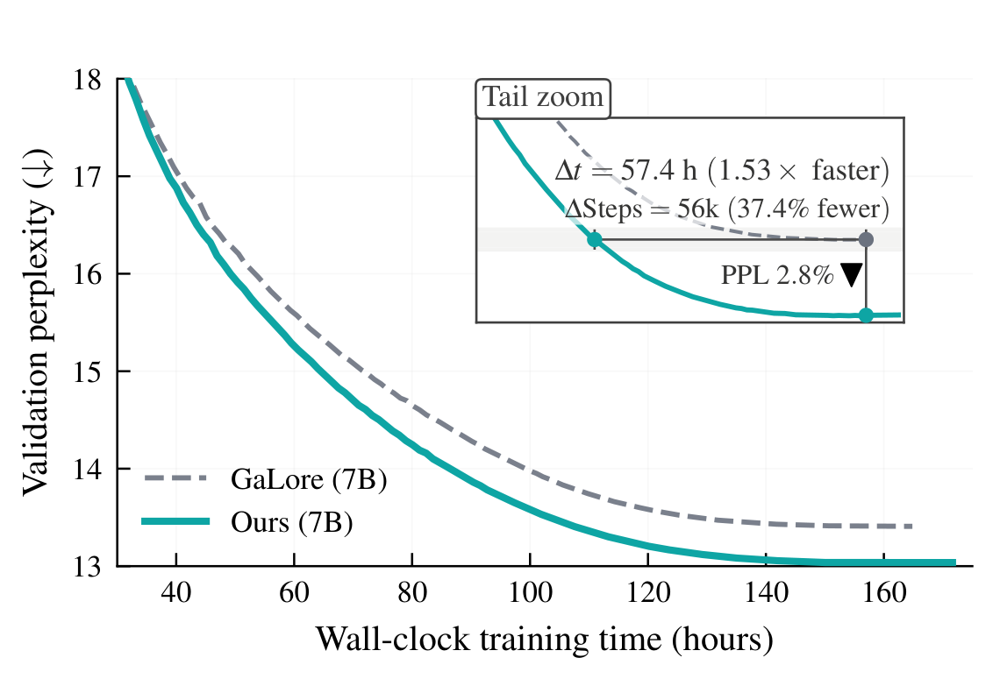

Why it matters왜 중요한가
Rank allocation is a well-worn idea in post-hoc compression and LoRA fine-tuning. This paper brings it to from-scratch pre-training, where memory-efficient optimizers had treated every module as equally compressible.
rank 배분은 사후(post-hoc) 압축과 LoRA 미세조정에서는 익숙한 아이디어다. 이 논문은 그것을 처음부터 하는 사전학습으로 가져온다. 이 영역의 메모리 효율 옵티마이저들은 지금까지 모든 모듈을 똑같이 압축 가능한 것으로 취급해 왔다.
Under Adam, the two moment tensors can cost more memory than the weights themselves. GaLore and its successors (Fira, OSD, LDAdam, SubTrack++, Q-GaLore) fix this by projecting each gradient G into an r-dimensional subspace and running Adam there. They have closed most of the perplexity gap to full-rank training, and the remaining cost is steps: low-rank training converges more slowly. The authors trace part of that to a measurable asymmetry. Measure how well each module's gradient survives projection, as the cosine between G and its low-rank reconstruction. mlp.down sits far below everything else: about 0.73 in early training, against about 0.97 for attn.v. A uniform rank is therefore too much for some modules and too little for mlp.down. The fix is cheap: an 11-minute profiling run and a static rank table. No online search is needed, and the optimizer state is never resized.
Adam에서는 두 모멘트 텐서가 가중치보다 메모리를 더 쓸 수 있다. GaLore와 그 후속들(Fira, OSD, LDAdam, SubTrack++, Q-GaLore)은 각 gradient G를 r차원 부분공간으로 투영하고 그 안에서 Adam을 돌려 이 문제를 푼다. 이들은 full-rank 학습과의 perplexity 격차를 대부분 좁혔다. 남은 비용은 스텝 수다. 저랭크 학습은 수렴이 느리다. 저자들은 그 원인 일부를 측정 가능한 비대칭에서 찾는다. 각 모듈의 gradient가 투영을 얼마나 잘 버티는지를 G와 저랭크 복원본 사이의 코사인으로 재 보면, mlp.down만 유독 낮다. 학습 초반 약 0.73인데, attn.v는 약 0.97이다. 그러니 균일한 rank는 어떤 모듈에는 넉넉하고 mlp.down에는 모자라다. 해법은 싸다. 11분짜리 프로파일링 한 번과 고정된 rank 표 하나면 된다. 온라인 탐색도 없고, 옵티마이저 상태의 크기를 중간에 바꾸지도 않는다.

By the numbers핵심 숫자
Which half transfers to other optimizers어느 쪽이 다른 옵티마이저로 옮겨 가나
| Host | Vanilla PPL | + Rank only | + Decomp only | Full MoARa |
|---|---|---|---|---|
| GaLore | 19.48 | 19.27 · 47k (↓22.0%) | 19.45 · 54k (↓9.6%) | 19.04 · 41k (↓31.7%) |
| Fira | 16.85 | 16.79 · 55k (↓8.3%) | 16.75 · 53k (↓11.7%) | 16.70 · 51k (↓15.0%) |
| OSD | 21.66 | 21.27 · 44k (↓26.7%) | 20.76 · 37k (↓38.3%) | 20.42 · 35k (↓41.7%) |
| Q-GaLore | 20.64 | 20.45 · 45k (↓25.0%) | 20.81 · — | 20.46 · 45k (↓25.0%) |
| SubTrack++ | 16.19 | 15.57 · 43k (↓28.3%) | 28.29 · — | 19.17 · — |
| LDAdam | 17.60 | 17.19 · 44k (↓26.7%) | 24.01 · — | 20.24 · — |
In one diagram한 장의 그림
The idea in four pieces아이디어를 네 조각으로
Module-aware rank reallocation
Keep the total projection rank fixed and redistribute it by module type: attn.q and attn.k drop from r to r/2, and mlp.down rises to 2r. mlp.down is where the expanded MLP representation is squeezed back to model width, and its gradient loses the most to projection. The same donor/receiver map, found once at 350M, is reused unchanged at 1B and 7B and carried over by structural analogy to Llama 3.2, Qwen2.5/3 (GQA) and DeepSeek-V2 (MLA). Step savings there were about 43%, 33% and 28%.
투영 rank의 총합은 고정하고 모듈 종류별로 다시 나눈다. attn.q와 attn.k는 r에서 r/2로 줄고, mlp.down은 2r로 는다. mlp.down은 넓게 펼쳐진 MLP 표현을 모델 폭으로 다시 압축하는 곳이며, 투영으로 잃는 gradient 정보가 가장 많다. 350M에서 한 번 정한 기증자/수혜자(donor/receiver) 배정을 1B와 7B에 그대로 재사용하고, 구조적 대응에 따라 Llama 3.2, Qwen2.5/3(GQA, 그룹 쿼리 어텐션), DeepSeek-V2(MLA, 잠재 어텐션)에도 옮겼다. 거기서 스텝 절약은 각각 약 43%, 33%, 28%였다.
High alignment ≠ safe to cut
By cosine alone, attn.v and attn.o (≈0.96–0.97) should have been the donors. A one-module-at-a-time rank-halving ablation said otherwise: cutting q or k barely moved final perplexity, but cutting v, o, up or gate hurt noticeably. The authors read v/o's high alignment as redundancy that projection preserves easily, not as spare capacity. The receiver came from the diagnostic; the donors came from the ablation. Against 20 random allocations with the same rank total, MoARa's table won every time (PPL 24.07 against 24.33–25.29 at 10k steps).
코사인만 보면 attn.v와 attn.o(약 0.96~0.97)가 기증자가 됐어야 한다. 그런데 모듈 하나씩 rank를 절반으로 줄이는 ablation(구성요소 제거 실험)은 다른 답을 냈다. q나 k를 줄이면 최종 perplexity가 거의 안 변했지만, v·o·up·gate를 줄이면 눈에 띄게 나빠졌다. 저자들은 v/o의 높은 정렬도를 여유 용량이 아니라 투영이 쉽게 보존하는 중복으로 해석한다. 수혜자는 진단 지표에서, 기증자는 ablation에서 나왔다. rank 합계가 같은 무작위 배분 20개와 비교해 MoARa의 배분이 모두 이겼다(10k 스텝 PPL 24.07 대 24.33~25.29).
Block-wise magnitude–direction split
Projecting a raw gradient shrinks its size and bends its direction in one step, and small-but-informative coordinates get lost. MoARa zero-pads each row, cuts it into 1×B blocks, and stores each block's L2 norm in a matrix M. M gets its own fp32 optimizer state outside the projection. Only the unit-norm direction V is projected. B sits near the head dimension (32/64/128 at 350M/1B/7B), between two failure modes: at B=1 the direction degenerates to a sign, and a very large B lets a few big coordinates drown the rest. B ∈ {32, 64, 128} forms a flat plateau.
원래 gradient를 그대로 투영하면 크기와 방향이 한꺼번에 줄고 뒤틀려서, 작지만 유용한 좌표가 사라진다. MoARa는 각 행을 0으로 채워 길이를 맞춘 뒤 1×B 블록으로 자르고, 블록마다 L2 norm을 행렬 M에 저장한다. M은 투영 밖에서 자기만의 fp32 옵티마이저 상태를 가진다. 투영되는 것은 단위 길이 방향 V뿐이다. B는 헤드 차원 근처로 잡는다(350M/1B/7B에서 32/64/128). 두 가지 실패 사이의 중간값이다. B=1이면 방향이 부호(±)만 남고, B가 너무 크면 큰 좌표 몇 개가 나머지를 묻어 버린다. B ∈ {32, 64, 128} 구간에서는 성능이 거의 평평하다.
Decomposition depends on the host
The split works on hosts whose projection basis is refreshed in jumps or drifts slowly (GaLore, Fira, OSD; OSD reaches −41.7% steps). It collapses on SubTrack++ (Grassmannian tracking) and LDAdam (per-step subspace correction), where the separately optimized magnitude apparently cannot stay in step with a direction whose basis keeps rotating. On Q-GaLore it adds nothing, even with the magnitude state promoted from 8-bit to fp32. The authors call these observed compatibility factors, not proven conditions.
이 분리는 투영 기저가 간헐적으로 갱신되거나 천천히 움직이는 옵티마이저(GaLore, Fira, OSD)에서 통한다. OSD는 스텝 −41.7%에 이른다. 반면 SubTrack++(그래스만 다양체 위에서 부분공간 추적)와 LDAdam(매 스텝 부분공간 보정)에서는 무너진다. 따로 최적화되는 크기가 계속 회전하는 기저 위의 방향과 보조를 맞추지 못하는 것으로 보인다. Q-GaLore에서는 크기 쪽 상태를 8비트에서 fp32로 올려도 아무 이득이 없다. 저자들은 이것을 증명된 조건이 아니라 관찰된 호환성 요인이라고 부른다.
How it works어떻게 작동하나
- Profile. 프로파일링. Run uniform-rank GaLore for 1k steps and, at regular strides, log the cosine between each weight's full gradient and its low-rank reconstruction. Average per module type. The donor/receiver assignment was the same across strides of 50–400 steps and matched much longer profiles; mlp.down stayed last by a 0.10–0.15 margin.균일 rank GaLore를 1k 스텝 돌리면서, 일정 간격마다 각 가중치의 전체 gradient와 저랭크 복원본 사이 코사인을 기록한다. 모듈 종류별로 평균 낸다. 기증자/수혜자 배정은 50~400 스텝 간격 어디서나 같았고, 훨씬 긴 프로파일과도 일치했다. mlp.down은 0.10~0.15 차이로 늘 꼴찌였다.
- Fix the rank table. rank 표를 고정한다. Donors D = {q, k} and receiver R = {down}, with Δr = rbase/2. With rbase = 256/512/1024 at 350M/1B/7B, down gets 2·rbase. The table never changes during training.기증자 D = {q, k}, 수혜자 R = {down}, Δr = rbase/2. 350M/1B/7B에서 rbase = 256/512/1024이므로 down은 2·rbase를 받는다. 이 표는 학습 중 바뀌지 않는다.
- Split every gradient. 모든 gradient를 쪼갠다. At each step, compute G, cut its rows into blocks of B, and separate block norms M from unit directions V. Refresh the projector P every 200 steps from a truncated SVD of V, using the module's allotted rank.매 스텝 G를 구해 각 행을 B 크기 블록으로 자르고, 블록 norm M과 단위 방향 V를 분리한다. 투영 행렬 P는 200 스텝마다 V의 절단 SVD로 다시 구하며, 그 모듈에 배정된 rank를 쓴다.
- Two optimizers, one update. 옵티마이저 둘, 업데이트 하나. Adam runs on PᵀV inside the subspace and the result is projected back. M is updated by its own optimizer, with state kept in fp32. The weight update is RepB(ΔM) ⊙ ΔV, cast to bf16.Adam은 부분공간 안의 PᵀV에서 돌고, 결과를 원래 공간으로 되돌린다. M은 fp32로 유지되는 자기만의 옵티마이저 상태로 따로 갱신된다. 가중치 업데이트는 RepB(ΔM) ⊙ ΔV이며 bf16으로 변환해 적용한다.
What to take away그래서, 가져갈 것
In low-rank optimizers, how the rank is split across modules matters. Moving it from Q/K to MLP-down is the transferable half of this paper: every one of six hosts converged sooner, and it costs one short profile and a static config.
저랭크 옵티마이저에서 rank를 모듈 사이에 어떻게 나누는지는 중요하다. Q/K에서 MLP-down으로 옮기는 것이 이 논문에서 다른 방법으로 옮겨 가는 쪽이다. 6개 옵티마이저 모두 더 빨리 수렴했고, 비용은 짧은 프로파일 한 번과 고정 설정 하나다.
A fidelity signal is not an importance signal. Gradient-reconstruction cosine found the bottleneck correctly but pointed at the wrong donors, and only an ablation caught it. The same trap applies to rank allocation in SVD compression, where a module that is "easy to approximate" is not necessarily cheap to cut.
충실도 신호는 중요도 신호가 아니다. gradient 복원 코사인은 병목은 정확히 찾았지만 기증자는 잘못 가리켰고, ablation을 해야만 그걸 잡을 수 있었다. SVD 압축의 rank 배분에도 같은 함정이 있다. "근사하기 쉬운" 모듈이 반드시 잘라도 되는 모듈은 아니다.
The mlp.down asymmetry holds across five architectures and three scales, which suggests a structural property of the MLP down-projection rather than a quirk of GaLore. Post-hoc compression papers (LoRAP, A³) also report that attention and FFN sub-layers behave differently under low-rank approximation.
mlp.down 비대칭은 5개 아키텍처와 3개 규모에서 유지된다. GaLore의 특이한 성질이 아니라 MLP down-projection 자체의 구조적 성질로 보인다. 사후 압축 논문들(LoRAP, A³)도 저랭크 근사에서 attention과 FFN 부분층이 다르게 행동한다고 보고한다.
Do not bolt the magnitude–direction split onto an optimizer that rotates its subspace every step. On SubTrack++ it turned a 16.19-perplexity run into 28.29.
부분공간을 매 스텝 회전시키는 옵티마이저에 크기–방향 분해를 덧붙이지 말 것. SubTrack++에서는 perplexity 16.19였던 학습이 28.29가 됐다.